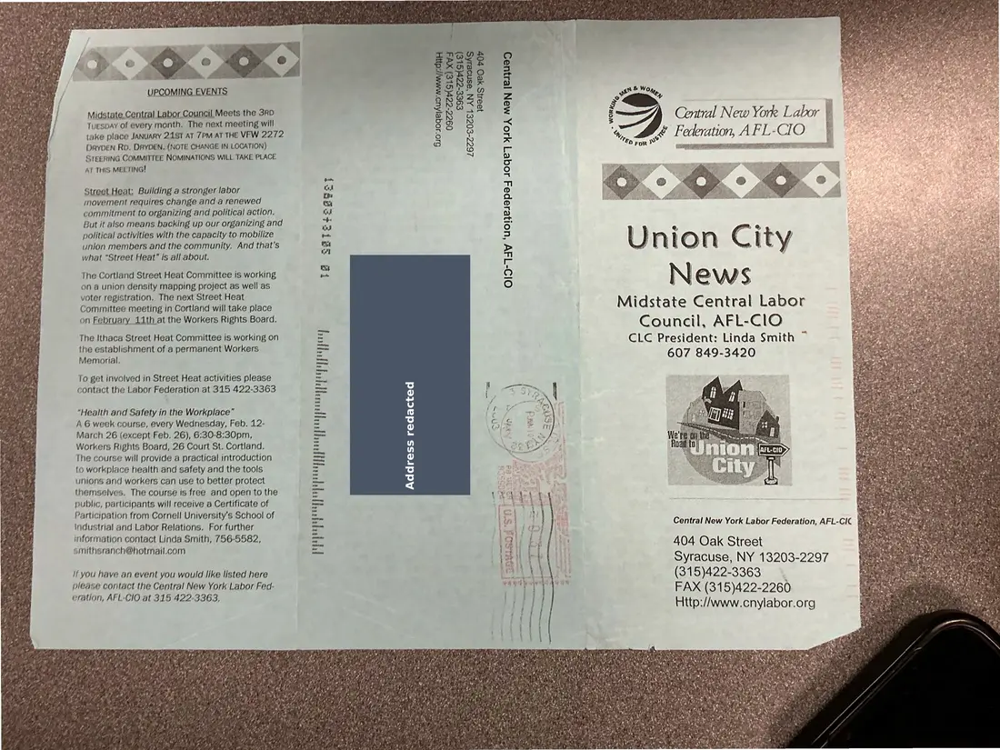
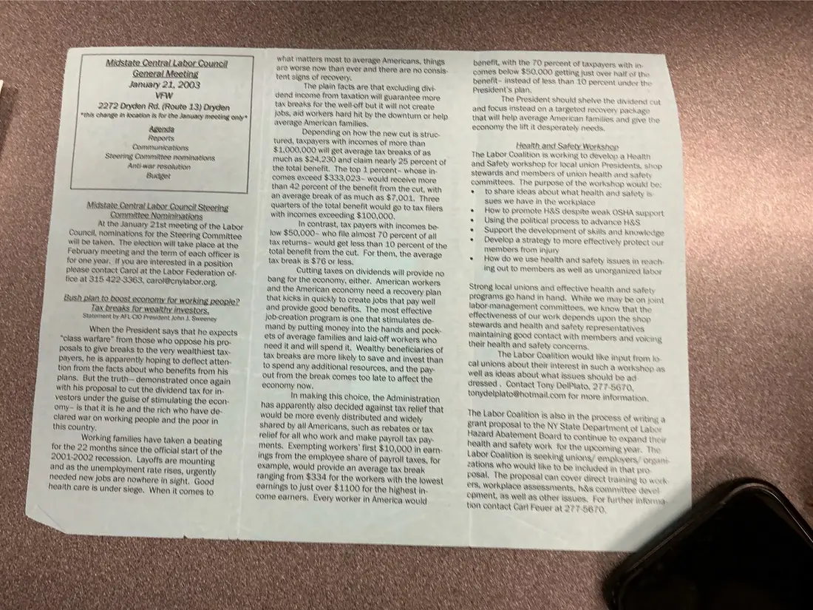

Newsletter, 2 pages
Union City News, Midstate Central Labor Council, January [2003]
January [2003]Date inferred
Announces the January 21 general meeting at the VFW in Dryden and reports on Steering Committee nominations, the economy and tax cuts, and health and safety work.
The outside panel and inside spread are paired here by their content.
Download or cite this itemPages


(open zoom view)A mailing label with a personal address has been covered on this page.
Read the page text (machine-read, mostly readable)
This text was generated automatically from the photograph and has not been corrected. The image is the authoritative record.
Midstate Central Labor Council. Meets the 3RD aol Central New York Labor © Tuespay of every month. The next meeting will & : | take place JANUARY 21ST AT 7PM AT THE VFW 2272 Me A FL-CI O p DRYDEN RD. DRYDEN. (NOTE CHANGE IN LOCATION) S pay } STEERING COMMITTEE NOMINATIONS WILL TAKE PLACE At THIS MEETING! Street Heat: Building a stronger labor movement requires change and a renewed commitment to organizing and political action. But it also means backing up our organizing and political activities with the capacity to mobilize union members and the community. And that’s what “Street Heat” /s all about. Union City News eed Midstate Central Labor Council, AFL-ClO CLC President: Linda Smith ~ 607 849-3420 The Cortland Street Heat Committee is working on a union density mapping project as well as voter registration, The next Street Heat Committee meeting in Cortland will take place on February 11th at the Workers Rights Board. O1D-TaV ‘uoHeJepaq s0ge7 410, MAN [es3UeD The Ithaca Street Heat Committee is working on the establishment of a permanent Workers Memorial. To get involved in Street Heat activities please contact the Labor Federation at 315 422-3363 “Health and Safety in the Workplace” A 6 week course, every Wednesday, Feb. 12- March 26 (except Feb. 26), 6:30-8:30pm, Workers Rights Board, 26 Court St. Cortland. The course will provide a practical introduction to workplace health and safety and the tools unions and workers can use to better protect themselves. The course is free and open to the public, participants will receive a Certificate of Participation from Cornell University’s School of Industrial and Labor Relations. For further information contact Linda Smith, 756-5582, smithsranch@hotmail.com Address redacted Central New York Labor Federation, AFL-CIC Py $3 404 Oak Street i} Syracuse, NY 13203-2297 Mm) (315)422-3363 " FAX (315)422-2260 Http:/Awww.cnylabor.org if you have an event you would like listed here please contact the Central New York Labor Fed- eration, AFL-CIO at 315 422-3363,


(open zoom view)Read the page text (machine-read, contains errors)
This text was generated automatically from the photograph and has not been corrected. The image is the authoritative record.
Mas: ate Central Labor Counc? G I Meeting January 2.1, 2003 VEW 2272 Oryion Ra. (Route 13) Oren | “Ws CRange M Woation & for the January meeting andy Asvnde Reports Oommunioatons Steenny Committee nommations Antinvar resekition Buyer At the January 21st meeting of the Labor Council, nominations for the Steering Committee will be taken, The etection will take place at the February meeting and the term of each officer is for one year. If you are interested in a position please contact Carol at the Labor Federation of: fice at 315 422.3363, carol@onylabor.org, When the President says that he expects “class warfare” from those who Oppose his pre. posals to give breaks to the very wealthiest tax. payers, he is apparently hoping to deflect atten: tion from the facts about who benefits from his plans, But the truth— demonstrated once again with his proposal to cut the dividend tax for in- vestors under the guise of stimulating the econ- OMmy= is that it is he and the rich who have de- clared war on working people and the poer in this country, Working families have taken a beating for the 22 months since the Official start of the 2001-2002 recession, Layoffs are mounting and as the unemployment rate rises, urgently heeded new jobs are nowhere in sight. Good health care is under siege, When it comes to What matters Host (0 average Americans, things are Worse How than ever and there are no consis: tent signs of recoven, The plain facts are that excluding dive dend noome from taxation will guarantee more tax breaks for the well-off but it will not create jobs, aid workers hard hit by the downturn or help average Amerioan families. Depending on how the new cut is struc tured, taxpayers with Nnoomes of more than $1,000,000 will get average tax breaks of as much as $24,230 and claim hearly 25 percent of the total benefit. The top 4 pereent= whose in comes exceed $333,023-~ would receive more than 42 percent of the benefit from the out. with an average break of as much as $7,004, Three Quarters of the total benefit would go to tax filers with incomes exceeding $:.00,000, Ih contrast, tax payers with incomes be- tow $50,000- who file atmost 70 percent of all tax returns= would get less than 10 percent of the total benefit from the out. For them, the average tax break is $76 or legs, Cutting taxes on dividends will provide no dang for the economy, either, American workers and the American economy heed a recovery plan that Kicks in quickly to create jobs that pay well and provide good benefits. The mast effective job-creation program is one that stimulates de- mand by putting money into the hands and pock ets of average families and laid-off workers who heed Nand will spend it, Wealthy beneficiaries of tax breaks are more likely to save and invest than to spend any additional resources, and the pay Out from the break comes too late to affect the eeonomy How, In making this choiee, the Administration has apparently also decided Against tax relief that would be more eventy distributed and widely shared by all Amerioans, such as rebates OF tax relief for all who work and make Payroll tax pay: ments, Exempting workers’ first $10,000 in earn ings from the employee share of Payroll taxes, for example, would provide an AVETARE lar break ranging from $334 for the workers with the lowest @arnings to just over $1.00 for the highest in- come earners, Every worker in Amerioa would benefit, with the 70 percent of taxpayers with in comes below $50,000 getting Aust over half of the benefit- instead of less than 10 percent President's blan, The President should shelve the dividend | and focus instead on @ targeted recovery pac AakO that will help average American famities ang give economy the lift it desperately needs rte tres Litrtiog ti Feanth amd? Safety Workshop The Labor Coalition is working to develop a Health and Safely workshop for local union Presidents, shop stewards and members of union health ane safety committees, The purpose of the workshop would } *® toshare ideas about what health and safety is sues we have in the workplace How to promote H&S despite weak OSHA Support Using the political process to advance H&S Support the development of skills and know tripe Develop a strategy to more effectiver Protect out members from injun * How do we use health and safety issues in reach ing Out to Members as well ag unorganized labor Strong local unions and effective Hhaalth and safer Programs go hand in hand, White we may be on joint labor-management committees, we know that the effectiveness of our work depends upon the shop stewards and health and safer representatives Maintaining good contact with Members and voicing their health and safety concerns. The Labor Coalition would like input from fo cal unions about their interest in such & WOrKSOD as Well as ideas about what issues Should be ad dressed , Contact Tony DeiPiato, 277 S670, me § tonydelplato@hotmail.com for more Information The Labor Qoalition is aiso in the process of writing a grant proposal to the NY State Department of Labo Hazard Abatement Board to CONUNUE tT Exhand Ur health and safety work for the UPCOMING year, The Labor Qoalition is Seeking untong/ enplovers’ ors zations who would tike to be tohuded A that ore hosal, The proposal ean cove: GHECT LAMM to wo SES, WOFKPlace agaessments, h&s committer ders Spment, as well ag other aaues, Por Turther informa, tion contact Cart Feuer at 27 7.6@ rO
See something wrong, or recognize a person or event? Send a correction. If you hold rights in this item or think it should not be public, write to the same address.